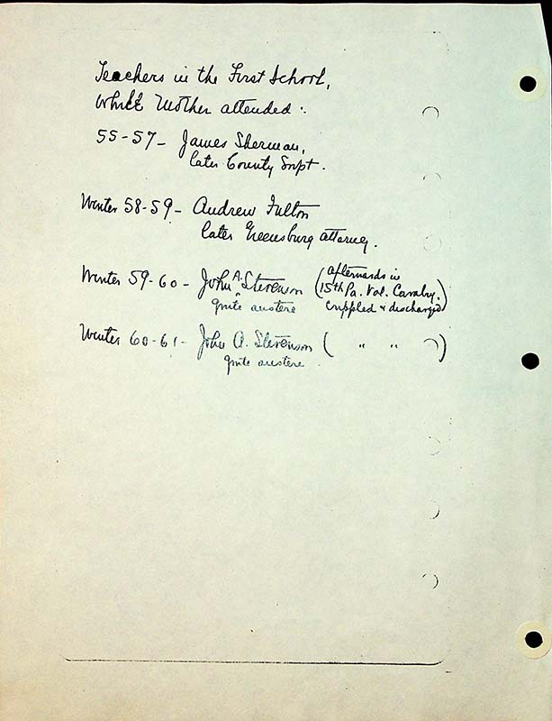

Teachers in the First School, which Mother attended:
| 55-57- | James Sherman, later County Srpt. |
|
| Winter 58-59- | Andrew Fulton later Greensburg Attorney |
|
| Winter 59-60- | John A. Stevenson quite austere |
Stevenson (afterwards in 15th PA Vol Cavalry, crippled & discharged) |
| Winter 60-61- | John A. Stevenson quite austere |
(“ “) |